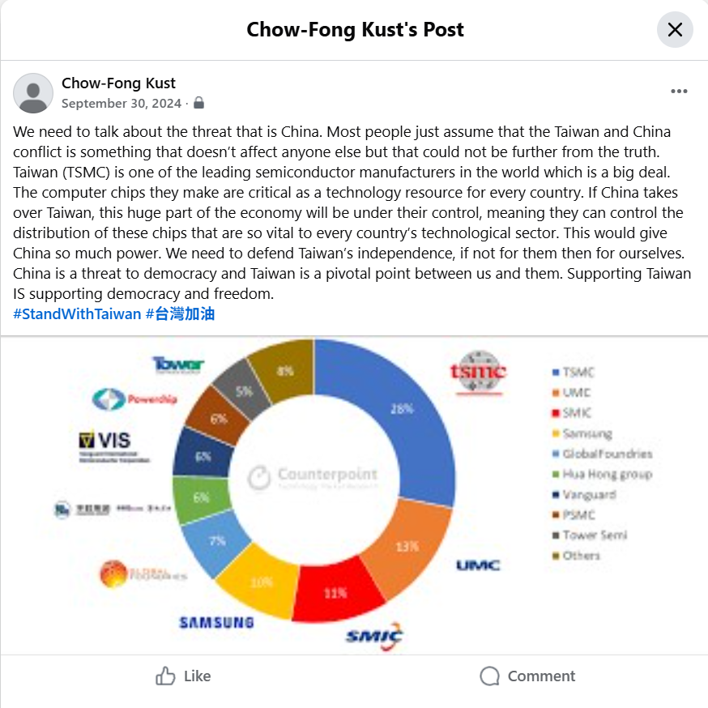
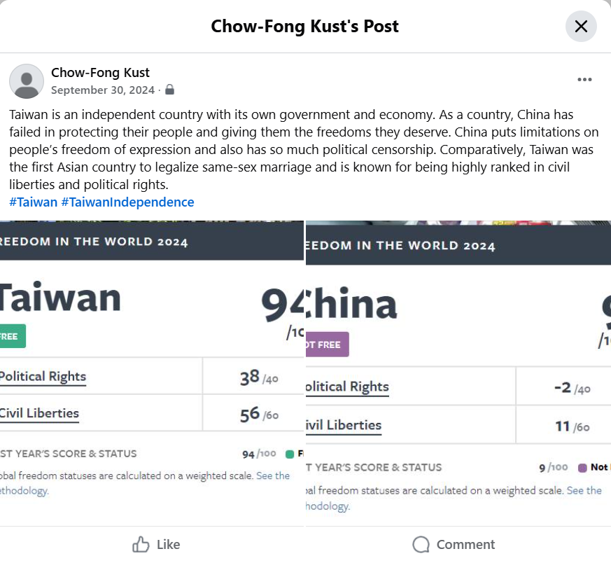

This project is an advocacy campaign that examines how social media can be used to communicate complex global issues. The process involved collecting and analyzing content from multiple platforms, including Instagram, Twitter, TikTok, YouTube, and Facebook. Posts, videos, and user interactions were reviewed to understand how information is structured, presented, and received by different audiences.
By engaging with a range of sources and formats, the project identifies common strategies used in digital advocacy, such as narrative framing, visual design, and audience engagement techniques. This analysis informed the development of original content. The final component of the project consists of two advocacy posts designed for Facebook. Each post addresses a different aspect of the topic, including historical context, the current situation, and methods of public engagement, while emphasizing clarity, accessibility, and effective communication.


Both advocacy posts were created on Facebook, reflecting patterns observed in the analyzed content. Each post combined a written description using rhetorical strategies with a supporting visual. The first post used ideological framing by linking support for Taiwan to the defense of democracy and freedom, supported by references to its role in the semiconductor industry and a visual of market share. The second post used juxtaposition to compare political rights and civil liberties in Taiwan and China, reinforced by visuals highlighting differences in freedom and governance.